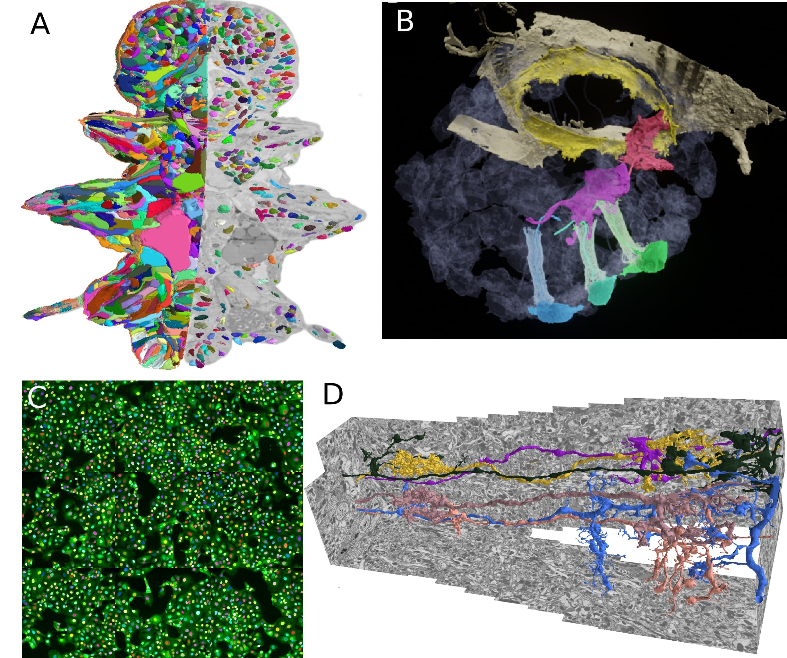

I am a Juniorprofessor at Georg-August University Goettingen and a member of the Institute of Computer Science and CIDAS. I lead the research group for Computational Cell Analytics. My research is focused on deep learning methods for computer vision, in particular segmentation, applied primarily to microscopy images.
I have started my group in March 2022 and am looking for a PhD student, job ad will come soon!
Previously, I have worked as a PostDoc at EMBL Heidelberg in the group of Anna Kreshuk and did my PhD at the University of Heidelberg under the supervision of Anna Kreshuk and Fred Hamprecht. During my PhD and PostDoc I have mainly worked on instance segmentation problems, with a focus on large volumetric electron microscopy data.
constantin.pape@informatik.uni-goettingen.de
Institute for Computer Science
University of Goettingen
Research
My main research interest is in high-quality segmentation methods for microscopy that require minimal supervision. The adoption of deep learning has improved the quality of image analysis for microscopy dramatically in the last decade. In the same period, the throughput, field of view and time resolution of microscopes has also increaded significantly, requiring the automation of key analysis steps, such as the identification of cells or other structures of interest through segmentation. While deep-learning based methods yield high enough quality to achieve this automation in many instances, they require large amounts of (manually) annotated training data . This limitation makes them impractical for many applications where no such training data is available and is too costly to create. Fortunately, the last years have seen a large reseach interest in weak supervision, domain adaptation and self-supervision, which promises to make training of high-quality models with significantly less annotated data possible. However, these methods are mostly developed for natural images and their adoption for microscopy has so far been limited. I aim to bridge this gap, building on initial work for domain adaptation, weak supervision and even reinforcement learning.
My previous research has been focused on boundary based instance segmentation. I have developed graph-based methods, using graph partitioning and fast heuristics. The initial focus of my work has been neuron segmentation in electron micrscopy (D), for which I have developed methods that scale to multi terayte volumes and can incorporate biological priors. These methods have been used in various life science applications: building a high resolution genetic and morphological atlas of P. dumerilii (A), analyzing the morphology of precursor neural cells in sponges (B) or developing an imaging based SARS-CoV-2 antibody assay (C). I plan to continue this work and make these methods available through easy-to-use tools in order to democratize the access to large-scale volumetric segmentation.
I am dedicated to open source and open science and am actively contributing to several related efforts. In particular, the bioimage.io modelzoo, a resource to share deep learning models for microscopy image analysis and ome.ngff, a new image data format that supports efficient storage of large data and on-demand access in the cloud. Furthermore, I co-develop MoBIE, a Fiji plugin for exploring and sharing large multi-modal image data.
Teaching
I give a lecture on deep learning for computer vision and hold seminars on advanced topics in deep learning and machine learning. Please check UniVZ for my current courses.Publications
Please find my full list of publications on Google Scholar. Below is a list of selected publications:- From Shallow to Deep: Exploiting Feature-Based Classifiers for Domain Adaptation in Semantic Segmentation, Frontiers in Computer Science (2022), Matskevych, Wolny, Pape and Kreshuk
- Profiling cellular diversity in sponges informs animal cell type and nervous system evolution, Science (2021), Musser, Schippers, Mizzon, Kohn, Pape et al.
- Whole-body integration of gene expression and single-cell morphology, Cell (2021), Vergara, Pape, Meechan et al.
- Microscopy-based assay for semi-quantitative detection of SARS-CoV-2 specific antibdoes in human sera, BioEssays (2021), Pape, Remme et al.
- Leveraging domain Knowledge to improve microscopy image segmentation with lifted multicuts, Frontiers in Computer Science (2019), Pape et al.
- The mutex watershed: efficient, paramter-free image partitioing, ECCV (2018), Wolf, Pape et al.
- Solving large multicut problems for connectomics via domain decomposition, ICCV Workshops (2017), Pape et al.
- Multicut brings automated neurite segmentation closer to human performance, Nature Methods (2017), Beier, Pape et al.
CV
- 2010-2013 Bachelor of Science, Physics, Ruprecht-Karls University Heidelberg
- 2013-2016 Master of Science, Physics, Ruprecht-Karls University Heidelberg
- 2016-2021 PhD, Physics, Ruprecht-Karls University Heidelberg
- 2017-2018 Visiting scientist, Janelia Research Campus
- 2018-2021 Visiting scientist, EMBL Heidelberg
- 2021-2022 PostDoctoral Fellow, EMBL Heidelberg
- 2022- Juniorprofessor, Georg-August University Goettingen